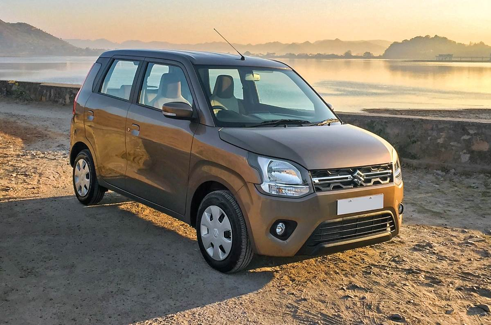
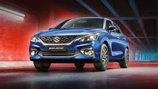
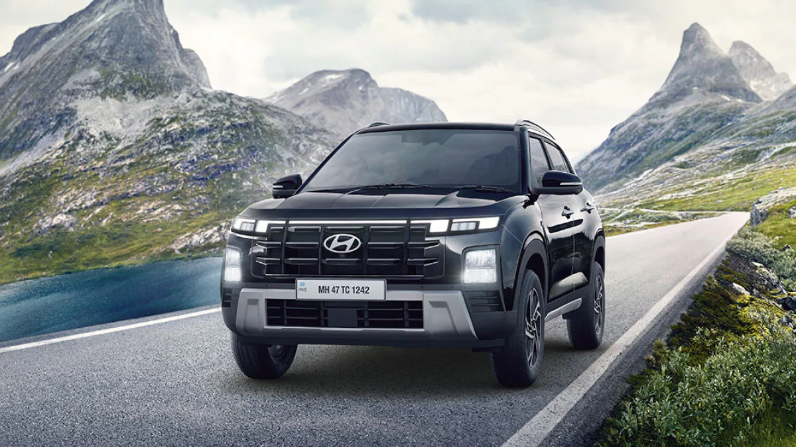
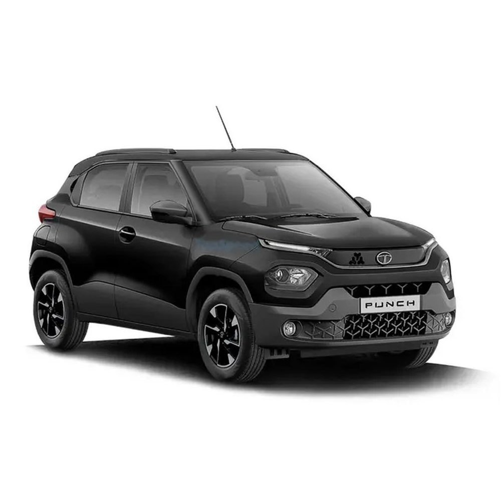
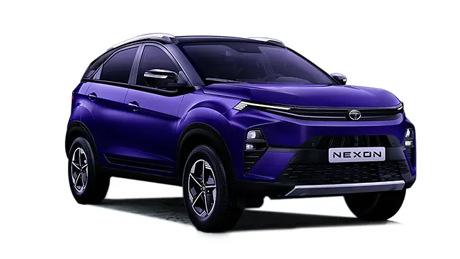
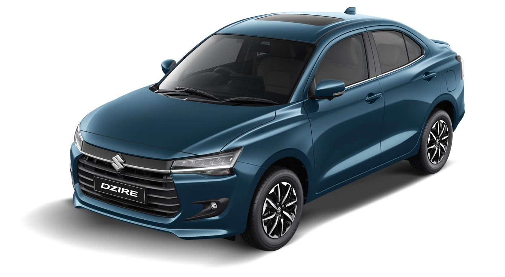

1. Maruti Suzuki Wagon R
Price:
₹5.6 Lakh | Mileage: 24km/lThe iconic Maruti Wagon R began the year by taking the top spot on the list of top selling cars. It sold 24,078 units in January 2025, gaining a 36 percent growth over the 17,756 units it sold during the same period last year.
Read more2. Maruti Suzuki Baleno
Price:
₹6.7 Lakh | Mileage: 22The Baleno has emerged as the best-selling car and is acclaimed as one of the most successful Maruti cars.January 2025 turned out to be a great month for the hatchback as it sold 19,965 units, which helped it see a 2 percent year-on-year growth.
Read more3.Hyundai Creta
Price:
₹11.1 Lakh | Mileage: 20kmThe best-selling SUV in India, Hyundai Creta, is also the best-ever-selling Hyundai car in India. With a long list of upmarket features, refined and reliable engines, and the trust of Hyundai,he Creta sold 18,522 units in January 2025.
Read more4. Maruti Suzuki Swift

Price:
₹6.5 Lakh | Mileage: 25kmSuzuki Swift has earned in India. In the game since 2005, the hatchback has been the face of an ideal hatchback for Indian preferences.Selling 17,081 units in January 2025.
Read more5. Tata Punch
Price:
₹6 Lakh | Mileage: 20kmhe Tata Punch saw a 10 percent decline in its year-on-year sales. This decline is the result of the very high standards the Tata Punch has set for it, Selling 16,231 units in January 2025.
Read more6. Maruti Suzuki Grand Vitara

Price:
₹11.2 Lakh | Mileage: 26kmThe iconic Maruti Wagon R began the year by taking the top spot on the 24,078 units in January 2025, gaining a 36 percent growth over the 17 period last year.
Read more7. Mahindra Scorpio

Price:
₹10.3 Lakh | Mileage: 14kmIt is the evergreen Scorpio Classic and the other is the even more capable Scorpio N, which turned out to be a ground-breaking success. Last month, both Scorpio Classic and Scorpio N collectively sold 15,442 units, gaining an 8 percent year-on-year growth. .
Read more8. Tata Nexon
Price:
₹8 Lakh | Mileage: 24kmthe Tata Nexon raked in sales of 15,397 units in January 2025, seeing a 10 percent year-on-year drop. Nonetheless, this drop is far from defining the quality of Tata Nexon, which is one of the blockbuster cars of all time.
Read more9. Maruti Suzuki Dzire
Price:
₹6.8 Lakh | Mileage: 25kmThe best-selling sedan in India, Maruti Dzire managed to sell 15,383 units in January 2025, which was an 8 percent drop from the 16,773 units it had sold in the same month last year .
Read more10. Maruti Suzuki Fronx

Price:
₹7.2 Lakh | Mileage: 23kmthe Fronx is selling well enough to be called one of the best-selling cars in India, and last month it grabbed a spot among the top ten by selling 15,192 units .
Read more